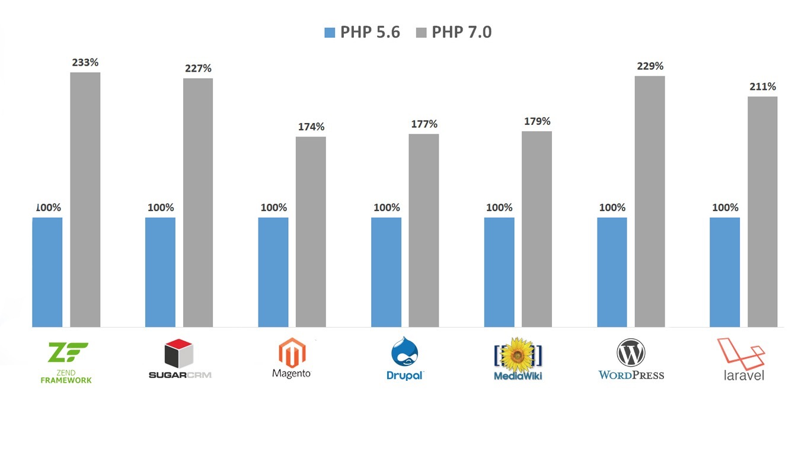

PHP7是PHP自诞生以来最大的一次版本升级，也是性能最大的一次升级，这已经是不争的事实，在多方的测试中都表现出很明显的性能提升。据称PHP7.3的速度是PHP5的3倍还多，这对于大部分PHP网站绝对是个非常有吸引力数据。PHP7还增加了64位支持、类型申明、运行时优化等多方面的优化改善。
这里收集了一些优化PHP7性能的Tips以备用。

为了让PHP7发挥出最大的性能，需要有几方面设置和注意点。
1. 启用Zend Opcache
PHP7在不启用Zend Opcache的情况下，运行速度也比5.6版本快，这会让你感觉PHP7已经发挥出它的性能了，其实不然。当你开启Opcache后，PHP7的性能才开始释放。开启Zend Opcache非常简单，打开php.ini配置文件或其独特的配置文件opcache.ini（如/etc/php/7.2/fpm/conf.d/10-opcache.ini）并填写：
1 | zend_extension=opcache.so |
设置完毕后可以通过phpinfo()来检查。
2. 使用GCC 4.8及以上的编译器
使用新一点的编译器, 推荐GCC 4.8或更高版本, 这样才能支持Global Register for opline and execute_data, 从Wordpres的QPS角度衡量会带来5%左右的性能提升。
其实GCC 4.8以前的版本也支持, 但是我们发现它支持的有Bug, 所以必须是4.8及以上的版本才会开启这个特性。
3. 开启HugePage
内存默认是以4KB分页的，而虚拟地址和内存地址需要转换，转化时候需要进行搜索，为了加速转换过程，可以通过内存TLB(Translation Lookaside Buffer)来。所以通过启用大内存页可以增加TLB 缓存命中，从而提高性能。
先在系统中开启HugePages, 然后开启Opcache的huge_code_pages，以CentOS 6.5为例，分配512个预留的大页内存：1
$sudo sysctl vm.nr_hugepages=512
在php.ini增加：1
opcache.huge_code_pages=1
这样PHP会把自身的text段, 以及内存分配中的huge都采用大内存页来保存, 减少TLB miss, 从而提高性能。但是很多实践发现启用后会带来系统负载过高，cpu占用过高问题，这时候通过关闭就可以解决，所以这个参数需要实际情况斟酌测试使用。
4. 开启Opcache file cache
通过开启Opcache File Cache(实验性), 可以让Opcache把opcode缓存缓存到外部文件中, 对于一些脚本会有很明显的性能提升。
在php.ini中加入:1
opcache.file_cache=/tmp
这样PHP就会在/tmp目录下缓冲一些Opcode的二进制导出文件, 可以跨PHP生命周期存在。
5. 活用PGO
如果你的PHP是专门为一个项目服务, 比如只是为你的Wordpress, 或者drupal, 或者其他什么, 那么你就可以尝试通过PGO来提升PHP, 专门为你的这个项目提高性能。
以wordpress 4.1为优化场景，在编译PHP的时候：1
$ make prof-gen
然后用项目训练PHP, 以Wordpress为例:1
$ sapi/cgi/php-cgi -T 100 /home/huixinchen/local/www/htdocs/wordpress/index.php >/dev/null
也就是让php-cgi跑100遍wordpress的首页, 从而生成一些在这个过程中的profile信息。
最后:1
2$ make prof-clean
$ make prof-use && make install
这个时候你编译得到的PHP7就是为你的项目量身打造的最高性能的编译版本。
6. 设置合适的realpath_cache_size
通过设置合适的realpath_cache_size值可以改善服务器的并发性能。1
2realpath_cache_size = 256k
realpath_cache_ttl = 300
7. 禁止mysqlnd.collect_statistics
线上服务器通过禁止这个选项，可以减少不必要的数据库访问。1
2mysqlnd.collect_statistics = Off
mysqlnd.collect_memory_statistics = Off
如果需要相关统计，可以使用MySQL工具或者监控。
这些是我总结的一些关于PHP7性能提升的Tips，如果你有什么补充或者疑问，欢迎提出。
参考文档
《让PHP7达到最高性能的几个Tips》，http://www.laruence.com/2015/12/04/3086.html
《PHP7.3声称速度比PHP 5快3倍还多，值得更新了！》，http://baijiahao.baidu.com/s?id=1603867999986910399&wfr=spider&for=pc